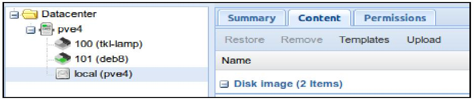

Глава 3. Создание контейнеров
"Контейнеры в пределах отдельной операционной системы намного эффективнее и, благодаря такой эффективности, они ложатся в фундамент будущего облачной индустрии инфраструктуры вместо архитектуры ВМ... Эффективность требует будущего контейнеров, работающих на оборудовании голого железа. Виртуальные машины отжили своё десятилетие."
– Linux Journal, June 7, 2013
(http://www.linuxjournal.com/content/containers%E2%80%94not-virtual-machines%E2%80%94are-future-cloud)
"Всё в Google работает в контейнерах... мы запускаем порядка 2 миллиардов контейнеров в неделю."
– Joe Beda, a senior staff software engineer for Google Cloud Platform in a talk at Gluecon 2014
(http://www.enterprisetech.com/2014/05/28/google-runs-software-containers/)
"Всякий раз, когда вы находитесь в центре обработки или вкругу облачного ИТ, вы теперь слышите о контейнерах вообще и о Docker в частности без остановки на протяжении всего года. После выпуска Docker 1.0 в июне жужжание переросло в рокот."
– ZDNET, August 4, 2014
(http://www.enterprisetech.com/2014/05/28/google-runs-software-containers/)
В Главе 2. Установка Proxmox VE мы вместе с вами прошлись по процессу установки Proxmox VE.
В данной главе мы сосредоточимся на создании контейнеров из шаблонов ОС или шаблонов виртуальных устройств. Своими умозаключениями данная глава адресуется к тому, как получать шаблоны и выделять из них LXC контейнеры при помощи Proxmox VE. Одновременно с этим мы изучим следующие вопросы:
-
Преимущества и примеры использования контейнеров
-
Регистрацию в веб- управляемом интерфейсе Proxmox VE
-
Исследование шаблонов ОС и виртуальных устройств, доступных непосредственно через интерфейс управления
-
Создание контейнеров как при помощи интерфейса на веб- основе,так и через командную строку
-
Запуск нового контейнера из интерфейса управления
-
Изменение состояния контейнера непосредственно из консоли PVE или через веб-интерфейс администрирования
Содержание
Глава 1. Основы Proxmox VE описала контейнеры GNU Linux в общем и в особенности потрудилась над их отличиями от виртуальных машин. В данной главе рассматриваются некоторые преимуществва контейнеров и она представляет некий сценарий для идеального развёртывания.
В то время, как администратор может запускать на физическом хосте 10- 100 виртуальных машин, она/ он может выполнять на том же самом хосте 100- 1000 контейнеров без значительного компромисса в производительности (http://computerpcdeal.com/servers-dell-poweredge/news_2014-06-17-05-30-07-224.html)
Изначально о контейнерах можно думать о контейнерах как об очень лёгких виртуальных машина, но с гораздо меньшими накладными расходами и добавленной стоимостью упрощённого развёртывания.
Контейнеры являются наследием джайлов (jail) FreeBSD и воспользовались неким возрождение, который становится всё более ценным критерием культуры в среде компьютерных профессионалов, особенно в связи с появление Docker в июне 2014.
Важно иметь в виду, что Docker изначально полагался на LXC, или контейнеры Linux, ту же технологию, на которую полагается Proxmox VE для своей контейнеризации начиная с выпуска 4,0.
Предыдущие выпуски, фактически, полагались на OpenVZ, другую контейнерную технологию с открытым исходным кодом. OpenVZ имеет репутацию стабильного и надёжного; до самого последнего времени, в разительном контрасте, LXC описывался как представитель юного апстарта, хотя и очень многообещающего, однако всё ещё незрелого.
Мы наблюдаем быстрое увеличение в течении, полученное LXC, которое иллюстрирует следующий снимок анализа тенденций Google https://www.google.com/trends/explore#q=%2Fm%2F0crds9p%2C%20OpenVZ&cmpt=q&tz=Etc%2FGMT%2B5. В качестве термина поиска OpenVZ имел очень бурный рост в 2006 и его популярность поддерживалась примерно до 2009 года, прежде чем она начала снижаться.
В то же время LXC медленно рос в популярности до 2014 - того самого года, когда Docker создал большую шумиху вокруг контейнеров - когда LXC превзошёл по популярности OpenVZ.
Волнуясь и беспокоясь о провокационном характере подобного ренессанса, Proxmox VE развернулся к LXC для своему уровню контейнеризации в конце 2015года; он был на переднем крае, он стабилизировался и он получил поддержку от таких корпораций как IBM и Canonical.
Термины, которые часто взаимозаменяемы с контейнеризацией в данном контексте включают в себя виртуализацию ОС (OS virtualization) и виртуальные частные серверы (virtual private servers).
Для ознакомления с графическим отображением истории контейнеров - начиная с Unix 7 с отслеживанием событий до 2014 года, посетите http://pivotal.io/platform/infographic/moments-in-container-history.
Обратите внимание, что Proxmox VE 4.1 поставляется с инструментарием, с помощью которого контейнеры OpenVZ могут быть перенесены в LXC. Для дополнительной информации посетите wiki PVE https://pve.proxmox.com/wiki/Convert_OpenVZ_to_LXC {Прим. пер.: см. наш перевод}.
Во многом как и ВМ, контейнеры являются изолированной сущностью; они могут независимо перезагружаться, допускают изолированный доступ root и имеют уникальный набор пользователей и групп.
Такое сходство изолирования также означает, потенциально, независимые адреса IP, памяти, процессов, библиотек и файлов настройки.
Набор свойств LXC отличает их от решений с полной виртуализацией:
-
Затраты ресурсов ЦПУ на виртуализацию посредством уровня контейнеризации LXC будут значительно ниже чем при полной виртуализации.
-
Авторизованный пользователь контейнера может изменять любой файл настройки и устанавливать дополнительное программное обеспечение внутри контейнера без влияния на прочие контейнеры и хост Proxmox VE
-
Хотя контейнеры и полностью изолированы друг от друга, они совместно используют динамические библиотеки на своём хосте, что существенно сохраняет оперативную память
-
Большинство контейнеров полностью загружаются за секунды, в то время как виртуальные машины могут грузиться минуты при тех же самых ресурсах
-
Поскольку контейнеры выполняются на самом ядре ОС нашей хост- системы, контейнеры работают с близкими к нулю накладными расходами
-
Сетевой обмен любого контейнера изолирован от всех прочих контейнеров; перехват обмена между контейнерами невозможен
-
Межсетевое экранирование может применяться внутри контейнера, поскольку можно выполнять обработку маршрутизации
С практической точки зрения, подобная функциональность предлагает, например, возможность масштабирования контейнеров без какого бы то ни было их перезапуска, а также предоставляет улучшение эффективность и лучшую производительность служб в сравнении с обычно обсуждающимися виртуальными машинами.
Безусловно, стоит отметить, что осторожные учёные мужи сейчас предполагают, что выдающееся преимущество в производительности контейнеров и уменьшение запрашиваемых ресурсов это несущественное преимущество, в частности, потому что всё более мощные аппаратные средства становятся доступными по более низкой цене. Важным аргументом здесь является то, что полная виртуализация всё ещё имеет место и что преимущество контейнеров является призрачными до тех пор, пока обсуждается перспектива недостаточности аппаратных ресурсов. {Прим. пер.: отсылаем к подобной аргументации у уважаемых авторов за дополнительными доводами.}
В этом присутствует доля истины, но это не опровергает утверждение, что во многих случаях контейнеры могут быть менее дорогостоящей альтернативой виртуальным машинам без ущерба для качества обслуживания.
Примем во внимание, что перечисленные ранее преимущества могут непосредственно привести к более длительному времени жизни хоста, помимо гибкости, заключающейся в том, что контейнеры могут быть быстро перенесены на другой физический узел для облегчения технического обслуживания аппаратных средств; для определённых типов угроз улучшается безопасность; и, наконец, LXC пользуется процветающим сообществом разработчиков и пользователей, великолепным ресурсом для поддержки, который доступен как с премиальной подпиской Proxmox VE, так и без неё.
![[Совет]](../common/images/admon/tip.png) | Совет |
|---|---|
|
TurnKey GNU/Linux Core Глава 7. Обеспечение безопасности Proxmox VE сосредоточится в частности на безопасности виртуальных машин. Хотя мы, безусловно, в плену революции контейнеров, всё же существуют нерешённые вопросы безопасности контейнеров, и мы обязаны быть усердными в разборе вопросов. Документация LXC https://linuxcontainers.org/lxc/security/ даёт некоторое представление. Дополнительная информация доступна и институте SANS по ссылке https://www.sans.org/reading-room/whitepapers/linux/securing-linux-containers-36142, и наконец, IBM предагает некоторые чёткие указания на странице http://www.ibm.com/developerworks/library/l-lxc-security/. Тем не менее, в области полной виртуализации существует целый ряд документов, которые работают над созданием протокола для виртуальных машин вне зависимости от производителя. Это предоставляет нам информацию для отклика и при помощи которой мы развиваем диалог. К сожалению, эта революция всё ещё слишком молода и пока нет подобных стандартов для виртуализации на уровне ОС кажущихся легко доступными. |
Такие сильные различия наборов функциональности должны провоцировать нас представить репрезентативный вариант немедленного применения контейнеров LXC; представьте себе среднее учебное заведение в целом, а затем рассмотрите его различные курсы вычислительных наук. Потенциал для объединения аппаратных ресурсов для двух связанных сценариев огромен.
Например, студенты вычислительной математики и информатики, а также по технологиям связи в отдельности могут иметь свои собственные персональные виртуальные серверы на которых они экспериментируют и выполняют практику под руководством или самостоятельно. Каждый имеет свой собственный персональный виртуальный сервер, на котором он экспериментирует, находит вдохновение, выполняет оценки и реализует своё инновационное видение.
Более того, одно и то же физическое оборудование может размещать контейнер, причём каждый для важных приложений:
-
Система управления обучением (LMS, learning management system), наподобие Moodle
-
Социальная сетевая среда в контейнере предоставляемая веб- приложением, подобным Moodle (https://elgg.org/about.php)
-
Система микроблогов, например, GNU Social (http://gnu.io/social/)
-
Сервер каталога, например, openLDAP, для предоставления службы единичной подписи по всей платформе.
-
Система портфолио через Mahara (https://mahara.org/)
-
Решение для веб- фильтрации и межсетевого экрана для защиты не только наших студентов, но также всей целостности данных, а также конфиденциальности заинтересованных сторон, а также для доступности служб.
-
Контроллер домена может быть снабжён дополнительной гибкостью и функциональностью (https://www.turnkeylinux.org/domain-controller).
Существует препятствие для контейнеров; они не являются решением всех проблем. Например, LXC, технология контейнера в уровне контейнеров PVE, работает только с гостями GNU/Linux.
Хосты Proxmox VE в дальнейшем ограничивают то, какие дистрибутивы Linux поддерживаются для контейнеров. На настоящий момент это поддерживаемые дистрибутивы и их выпуски:
-
Debain (6, 7, 8)
-
CentOS 6
-
Ubuntu (12.04, 14.04, 15.04)
-
Archlinux
С абсолютной уверенностью подтверждается, что 4.1 является очень недавно выпущенным PVE и совершенно ясно, что Proxmox VE с каждым месяцем будет поддерживать больше дистрибутивов.
Следующий раздел фиксируется на самых первых шагах, необходимых нам для предоставления размещающихся в PVE служб в контейнерах - получение шаблонов контейнеров.
Мы завершим данный раздел напоминанием о том, что Proxmox VE является платформой виртуализации корпоративного класса, которая поддерживает как контейнеры, так и полную виртуализацию - именно потому, что каждый из них имеет определённую роль в вашей инфраструктуре.
Шаблон является отправной точкой для контейнера LXC (в Proxmox VE принято сокращение "CT"). Существуют два сорта шаблонов: шаболны ОС и шаблоны устройств (appliance templates).
Шаблоны операционной системы предоставляют минимальный набор пакетов из дистрибутива GNU/ Linux а также системных библиотек и сценариев для запуска и работы в контейнере. Они разработаны для полного извлечения преимуществ от работающего на вашем хосте ядра GNU/ Linux.
Дополнительное программное обеспечение, такое как компилятор или СУБД обычно не включаются в шаблон ОС помимо основных инструментов, наподобие интерпретатора bash и утилит.
В противовес шаблонам ОС, виртуальные устройства строятся поверх JeOS (Just enough Operating System, {Прим. пер.: см., например, JeOS и vmbuilder в Ubuntu}) для предоставления очень специфичной службы надёжно, безопасно и при абсолютной приверженности эффективности.
Виртуальные устройства могут предоставлять общую функциональность, например стек LAMP; или конкретное приложение, например, GitLab (https://about.gitlab.com/); а CMS, наподобие WordPress или Drupal; или система наблюдения за сетевой средой на веб- основе, такая как Observium (http://www.observium.org/.
Самым убедительным аргументом виртуальных устройств является то, что они просто работают при минимальной конфигурации и требуют минимальных действий самого пользователя.
И шаблоны ОС виртуальные устройства доступны через интерфейс управления Proxmox VE. На данный момент все доступные устройства (appliance) предоставляются TurnKeyGNU/Linux; который предоставляет более 190 устройств от веб- приложений до SDK (software development kits), а также административные шаблоны для мониторинга сетевой активности, предоставления LDAP или контроллера домена и многое другое.
Каждое из этих устройств строится из одной и той же версии Debian, называемой Turnkey GNU/Linux Core (Debian 8) с функциональностью, по крайней мере: shellinabox, сервер OpenSSH и настроенный под пользователя Webmin.
|
| Совет |
|---|---|
|
TurnKey GNU/Linux Core Для получения дополнительной информации по ядру TurnKey GNU/Linux посетите http://www.turnkeylinux.org/core. |
Шаблоны доступны напрямую через интерфейс управления Proxmox VE, который предлагает как шаблоны ОС, так и шаблоны устройств.
В данном разделе мы зарегистрируемся в интерфейсе управления на основе веб, переместимся в хранилище в просмотре сервера, а затем просмотрим весь список доступных шаблонов.
![[Предостережение]](../common/images/admon/warning.png) | Предостережение |
|---|---|
|
Для продвижения по плану, ваш Proxmox VE должен иметь доступ в интернет. |
Чтобы начать, зарегистрируйтесь в Proxmox VE с рабочей станции в той же самой локальной сети; укажите браузеру порт 8006 и IP адрес вашего
экземпляра Proxmox VE с применением SSL/TLS. Настроенная в этой главе машина имеет адрес 192.168.1.80;
для доступа к этой машине, например, следует просто перейти к https://192.168.1.80:8006 в браузере
(с разрешённым JavaScript).
Поскольку PVE имеет самостоятельно подписанный сертификат, браузер выдаст предупреждение не может быть подтверждено. Например, Firefox предоставит окно подобное следующему:
Пользователи Firefox могут выполнить следующее:
-
Для продвижения вперёд в Firefox, выберите Advanced и кликните появившуюся кнопку Add Exception….
-
В своём всплывшем диалоге Add Security Exception, кликните на Confirm Security Exception, отметив при этом что вы можете выбрать сохранить это исключение на постоянной основе выбрав флажок Permanently store this exception (это окно захвачено в следующем снимке):
Если вы применяете Google Chrome для доступа к интерфейсу администрирования, вы должны увидеть страницу, похожую на следующий снимок экрана:
Чтобы игнорировать этот (при некотором беспокойстве) сигнал тревоги:
-
Открутите вниз страницы.
-
Кликните Advanced.
-
Кликните Proceed to 192.168.1.80.
Два соображения, которые следует сделать по поводу этой ссылки: она помечается как "unsafe" в качестве напоминания что она может иметь риск безопасности и этапов для пользователей chrome.
Какой бы браузер ни применялся, убедитесь, что заменили https://192.168.1.80:8006 собственным
IP адресом для вашего хоста Proxmox VE.
|
| Предостережение |
|---|---|
|
Для объяснения данных предупреждений браузера, ознакомьтесь с самоподписываемыми ресурсами в отношении TLS/SSL: http://en.wikipedia.org/wiki/Self-signed_certificate, http://en.wikipedia.org/wiki/HTTPS {Прим. пер.: https://ru.wikipedia.org/wiki/HTTPS, там же о самоподписанных сертификатах на рус.яз. существенно: "Без проверки сертификата каким-то другим способом (например, звонок владельцу и проверка контрольной суммы сертификата) такое использование HTTPS подвержено атаке человек-посередине"}, http://security.stackexchange.com/questions/8110/what-are-the-risks-of-self-signing-a-certificate-for-ssl. |
Когда страница полностью загружена, выполните регистрацию с именем пользователя root и паролем, который вы
определили в Главе 2. Установка Proxmox VE.
Выберите область (Realm) с названием Linux PAM Standard Authentication. Последнее поле определит язык интерфейса. Сделайте свой выбор кликнув для продолжения на Login.
После успешной регистрации вы получите свой первый просмотр графического интерфейса администрирования Proxmox VE.
В левой колонке, ближе к заголовку, выбранный обзор уже должен быть установлен на Server View:
-
Расширьте дерево ресурсов непосредственно под Server View (узел Центра обработки данных). В нижней части дерева ресурсов в левом фрейме будут присутствовать хранилища, которые являются локальными для вашего физического хостаи помечены как local с последующим именем вашего хоста в скобках; в последующем снимке экрана именем хоста является
pve4, а узел хранения просто помечается локальным (pve4).
-
Выберите свой локальный узел хранения для вашего сервера; на следующем снимке, например, выберите
local(pve4): -
В правом кадре появятся закладки; Summary, Content и Permissions. Выберите закладку Content для обнаружения обеих кнопок Templates и Upload.
Рисунок 3.8. Локальное хранилище для узла PVE c именем pve4.

Снимок для визуализации местоположения локальных (PVE4) хранилищ, а также кнопок Templates и Upload.
Для просмотра списка или загрузок шаблонов ОС и виртуальных устройств (appliance) предоставляемых через ваш интерфейс PVE, следуйте этим шагам:
|
| Совет |
|---|---|
|
urnkey GNU/Linux Appliance Library Если вы решите что вам нужно знать что-то ещё об определённом устройстве (Appliance) Turnkey GNU/Linux, укажите своему браузеру Главе 2. Знакомство с графическим интерфейсом Proxmox Для получения дополнительной информации по ядру TurnKey GNU/Linux посетите http://www.turnkeylinux.org/all и просмотрите на списки детализации описания и свойств для каждого устройства (appliance). |
|
| Совет |
|---|---|
|
В оставшейся части главы я буду работать с шаблонами Ubuntu 14.04-standard. Пока ещё рекомендуется чтобы вы следовали за мной, существует множество увлекательных шаблонов для начала. |
После выбора шаблона ОС или устройства.
-
Кликните на сделанный вами выбор.
-
Кликните на кнопку Download.
Шаблон будет сохранён в локальном хранилище PVE в /usr/share/vz/cache/templates/
|
| Совет |
|---|---|
|
Если список доступных шаблонов выглядит незавершённым, он может быть обновлён из командной строки вашего хоста PVE. Осуществите доступ к интерфейсу командной строки зарегистрировавшись локально на этом хосте, через SSH или с применением своей консоли noVNC доступной через веб- интерфейс. После выполнения аутентификации, обновите свой список шаблонов просто введя в приглашении |
Теперь, когда шаблон скачан, из него можно построить контейнер. В нашем следующем разделе мы настроим и создадим свой первый шаблон.
Вы уже могли заметить, что когда вы выделяете элемент в хранилище - ISO или шаблон, в верхней части правой стороны вашего кадра появляется параметр Create CT (контейнер) или Create VM. Для построения контейнера из шаблона Proxmox VE:
-
По крайней мере, имейте под рукой следующую информацию:
-
Пароль для вашего пользователя root
-
Имя для своего хоста
-
Свободный IP адрес для этого хоста
-
Максимальный объём оперативной памяти
-
Количество ЦПУ
-
Понимание того, какой объём пространства хранения вам понадобится для (виртуального) жёсткого диска (в ГБ)
-
IPv4 адрес вашего шлюза в интернет
-
Соответствующая маска подсети для сетевой среды, в которой находится ваш хост
-
-
Если вы уверены в наличии у вас этой информации, выберите локальный шаблон, из которого вы хотите построить контейнер.
-
Кликните на кнопку Create CT в правом верхнем углу (смотрите экранный снимок ниже).
-
Нажатие на Create CT запускает диалог Create LXC Container, который предоставляет графический интерфейс для настройки вашего контейнера.
Первой закладкой будет General
Используйте этот диалог для определения имени хоста и подтверждения пароля пользователя root. Поле идентификатора ВМ заполняется автоматически инкрементально в вашем веб- интерфейсе: первый созданный гость по умолчанию будет иметь VM ID со значением
100, следующий101и так далее. -
Кликните Next для выполнения закладки Template, отображённой здесь:.
-
Чтобы следовать тексту книги, в ниспадающем меню Template выберите Ubuntu-14.04-standard_14.04-1_amd64.tar.gz кликните Template для продолжения с закладкой Root Disk.
На данный момент Storage определён как local и альтернатив не доступно. Определите размер своего виртуального диска, отвечающего вашим потребностям (однако потрудитесь избежать Disk Size менее 4ГБ).
-
Кликните Next для определения предела CPU и его элементов. Для целей данной книги давайте оставим эти значения назначаемыми по умолчанию.
-
Кликните Next для настройки Memory для вашего контейнера.
-
И опять,нас удовлетворяют значение по умолчанию, поэтому мы переместимся с закладки Memory на закладку Network.
Закладка Network предполагает некоторые начальные знания о сетевой среде, к которой подключается ваш контейнер. Поскольку в данном случае хост PVE находится в
192.168.1.80, первый контейнер будет иметь адрес192.168.1.81, статический адрес, который, как я уверен, не будет вступать в конфликт с остальными устройствами. В верхнем правом углу мы выбрали Static вместо DHCP.Проверьте, что вы определили в поле IPv4/CIDR область действия. В нашем случае маской подсети является значение 255.255.255.0, поэтому IP адрес добавляется значением
/24. Если правильная маска подсети содержит больше адресов, например, 255.255.0.0, просто добавьте/16вместо предыдущего значения. для тех, кто не готов к вычислениям CIDR, существует калькулятор, доступный по адресу http://www.subnet-calculator.com/cidr.php.Для наших целей IPv6 не рассматривается; выберите переключатель DHCP и затем проверьте левую колонку закладки Network.
Name определяет как будет именоваться ваш виртуальный сетевой интерфейс внутри контейнера; значение по умолчанию eth0, именно то, что нужно нам.
Поле Bridge запрашивает к какому мосту на вашем хосте подключать данный контейнер; значение по умолчанию установлено в
vmbr0, причём это единственный выбор; используемая мной машина имеет только один NIC, и он определён в хосте какvmbr0.Когда будете готовы зафиксировать установки в своей закладке Network, кликните на Next для указания своему контейнеру на сервер DNS. class="userinput">Network.
И вновь, как и в случае с сетевой средой, установленное по умолчанию в поле DNS domain значение use host settings в точности отвечает моим требованиям. Для повторного просмотра настроек и их фиксации кликните на Next.
Закладка Confirm предлагает итоговые настройки, а также возможность повторно принять некоторые решения по настройкам. Кликните Back для изменений или Finish для начала задачи создания.
После нажатия Finish, диалог настройки закрывается и в браузере открывается новое окно, которое предлагает возможность наблюдать за построением PVE контейнера LXC из шаблона на основе вашей настройки:
Когда окно Task viewer выведет
TASK OK, контейнер готов к применению. Окно Task viewer можно закрыть.
![[Замечание]](../common/images/admon/note.png)
В большинстве случаев изменения настройки контейнера и добавление виртуальных устройств может быть простым образом выполнено при помощи веб- интерфейса. Для редактирования настройки или добавления устройств:
-
Выберите необходимый контейнер в просмотре Server в левом кадре интерфейса.
-
В рамке с правой стороны взгляните на группу закладок под кнопкой Start (отображённых на снимке экрана ниже).
-
Отметьте задачу, которую вы хотите выполнить по имени закладки.
-
Воспользуйтесь кнопками Add и Edit для выполнения желаемых изменений.
Следующий раздел посвящён управлению состоянием любого заданного контейнера; например, тому, как запускать и останавливать его.
Для запуска контейнера выберите его в левой панели; его иконка должна быть чёрного и серого цветов, обозначая, что контейнер не выполняется.
-
На следующем снимке экрана мой контейнер, идентифицируемый VM ID со значением 100 и своим именем trusty-chapter3:
-
В правом верхнем углу интерфейса запустите свой контейнер, кликнув на кнопку Start:
Когда процесс запуска контейнера выполнится, это будет обозначено в ревой рамке интерфейса изменением цвета иконки этого контейнера; она должна стать теперь зелёной, чёрной и серой вместо просто чёрно-серой; добавление зелёного к иконке является быстрым способом визуализации разницы между работающим и остановленным контейнерами.
В дереве ресурсов, в вашем левом кадре, выберите выполняющийся контейнер.
В правой стороне вашего экрана доступны различные кнопки:
-
Клик по Shutdown вызовет вежливую остановку вашего контейнера.
-
В противоположность таковой кнопка Stop внезапно прервёт этот контейнер.
-
Migrate позволяет нам перемещать даже работающий контейнер между узлами кластера Proxmox VE без вызова каких- либо простоев или прочего вынужденного бездействия.
-
Кнопка Remove удаляет остановленный контейнер. Отметим, что не существует опций восстановления если для этого контейнера не выполнено резервное копирование.
Чтобы приостановить контейнер, выберите закладку Backup в вашем веб- интерфейсе PVE. Кликните на Backup now и, в появившемся блоке диалога, выберите Suspend в ниспадающем меню Mode. Кликните на кнопку Backup для приостановки контейнера и закройте диалог.
Состоянием контейнера можно также управлять из командной строки PVE (либо через сеанс SSH, либо из консоли noVNC, или зарегистрировавшись на физическом хосте).
Для запуска описанного в этой главе контейнера с назначенным ему VM ID 100, введите
pct start 100. Точно так же, этот же самый контейнер может быть снесён при помощи
pct stop 100.
Шаблоны могут резервироваться либо через командную строку PVE, либо из веб- интерфейса. Для получения дополнительных сведений о резервном копировании и восстановлении контейнеров посетите вики Proxmox: https://pve.proxmox.com/wiki/Linux_Container#Backup_container.
Большинство шаблонов ОС доступных через ProxmoxVE, изначально настроены на доступ либо через вашу консоль noVNC, которая может быть запущена из веб- интерфейса управления, либо через интерфейс командной строки PVE.
Это не означает, что OpenSSH не установлен; на самом деле, я никогда не видел шаблона без установленного сервера OpenSSH. Шаблоны ОС просто не настроены при запуске так, чтобы пользователь root мог зарегистрироваться с паролем. (Однако к устройствам Linux TurnKey можно осуществлять доступ через SSH с учётной записью root применяя пароль.)
|
| Совет |
|---|---|
|
Команда |
Для доступа к выполняющемуся контейнеру через консоль noVNC выберите в вашем веб- интерфейсе работающий шаблон, а затем выберите Console справа вверху в своём браузере и в ниспадающем меню выберите noVNC.
Рисунок 3.26.
Когда выбран выполняющийся контейнер, появляется кнопка Console в правом верхнем углу страницы
В качестве альтернативы выберите запущенный шаблон как уже описывалось ранее, однако вместо клика по ниспадающему меню Console выберите закладку Console для вашего контейнера.
Если вы получили доступ к терминалу через эту консоль, как отображено на следующем снимке экрана, вы располагаете полным набором для создания пользователей, установки пакетов, а также внесения прочих изменений в настройки чтобы придать этому контейнеру необходимую вам индивидуальность.
Если консоль запустилась, но отображает только чёрный экран и не реагирующий курсор, попробуйте нажать Enter и найти приглашение для регистрации. Если это не сработает, учтите, что некоторые контейнеры должны быть перезапущены один раз чтобы запрашивать учётные данные; перезапустите ваш контейнер, а потом ещё один раз, запустите свою консоль noVNC. Если экран noVNC всё ещё тёмный, нажмите Enter чтобы выудить приглашение от него.
Данная глава подробно рассмотрела процесс разработки контейнеров из шаблонов LXC. Мы исследовали перспективы контейнеров LXC в Proxmox VE и выполнили набросок примера варианта использования который может быть обобщён на прочие обстоятельства и который демонстрирует как функциональность ваших контейнеров Proxmox VE может добавлять пользу, гибкость и расширяемость в организацию инфраструктуры ИТ.
После обсуждения того, как извлекать контейнер из шаблона, мы изучили способы манипулирования контейнерами как из командной строки, так и через веб- интерфейс.
В Главе 4. Создание виртуальных машин мы установим преимущества виртуальных машин над контейнерами и изучим некоторые варианты применения. В окончании главы мы пройдёмся по созданию виртуальных машин Microsoft Windows и GNU/Linux из ISO.
При помощи того, что мы знаем о контейнерах, будет захватывающе изучать место для виртуальных машин в культуре, в которой очарование установилось на верности котейнеризации.